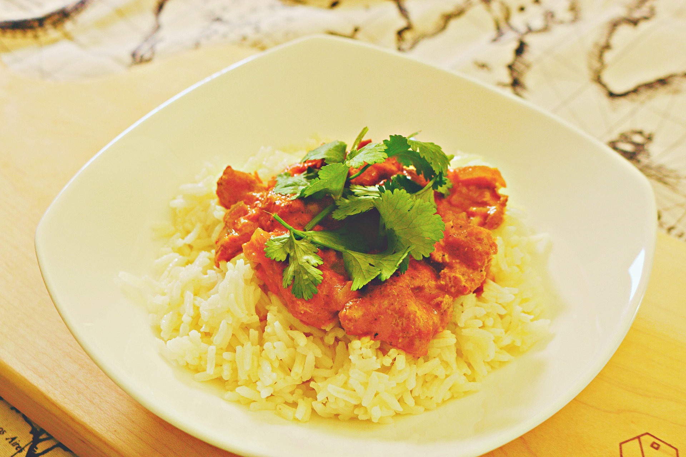
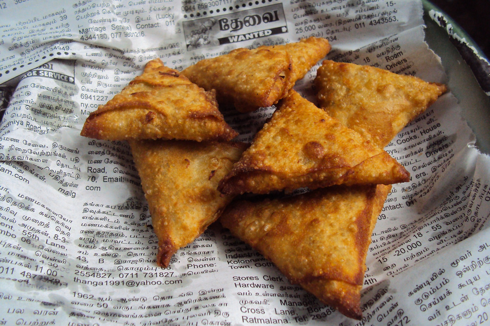

Three foods to look at.
Vegetable korma
South Indian Vegetable Korma is a creamy coconut curry that is light on spice but big on flavor. This tasty dish is easy enough for a weeknight dinner! INDIAN KORMA Korma (or Kurma) is an Indian dish of vegetables (and sometimes meat) that is simmered in a fragrant and creamy sauce until thick and comforting. Korma is popular all across India, and you will find it made differently in each region. Generally speaking, in northern India they will add yogurt and cream to their korma, while in southern India they add ground nuts to give their korma a creamy consistency. The most common version of Korma is Chicken Korma, which includes bite-sized pieces of meat, but today we’re making an all veggie version that is no less satisfying.
Learn more at:
A little bit about vegetable korma.
Chicken Tikka Masala
A little bit about Chicken Tikka Masala. Learn more at:The small bite sized pieces of Chicken Tikka that we now know so well are said to have been the request of an emperor about 5000 years ago who was terrified of choking on bones. He ordered his Punjabi chefs to cut his chicken off the bone before cooking in the tandoor and so Chicken Tikka was born. It wasnt until the 1950s when many people began emigrating from India to Britain that Indian restaurants began to appear up and down the country and Chicken Tikka became popular in Britain.
 chicken tikka masalaSamosas
samosa- Learn more at:This is one food that has travelled far and wide, and like any popular traveller has left its footprints along the way. From Egypt to Libya and from Central Asia to India, the stuffed triangle with different names has garnered immense popularity. Originally named samsa, after the pyramids in Central Asia, historical accounts also refer to it as sanbusak, sanbusaq or even sanbusaj, all deriving from the Persian word, sanbosag. In South Asia, it was introduced by the Middle Eastern chefs during the Delhi Sultanate rule, although some accounts credit traders for bringing the fare to this part of the world. Nevertheless, from its humble beginnings—in older days, people would cook the mince-filled triangles over campfire and eat them as snacks during travel—samosa has come a long way. And after having earned the blessings of the Indian royalty, the snack soon became food fit for the king. Today, samosa is a popular snack in many parts of the world. Perhaps its biggest secret to popularity and survival over the centuries is its different varieties of fillings catering to carious tastes across the globe. In Kazakhstan, for example, a somsa is typically baked and has a thicker, crumblier crust. Fillings generally range from minced lamb and onions, meat, and even pumpkin. The Hyderabadi luqmi, on the other hand, is strictly meat-filled and far crustier than the regular samosa consumed elsewhere in India and Pakistan. In the Middle East, the semicircular sambusak is stuffed with feta cheese, onions, minced chicken and meat, spinach, and in case of Jewish cuisine, mashed chickpeas.
A little bit about samosas. 